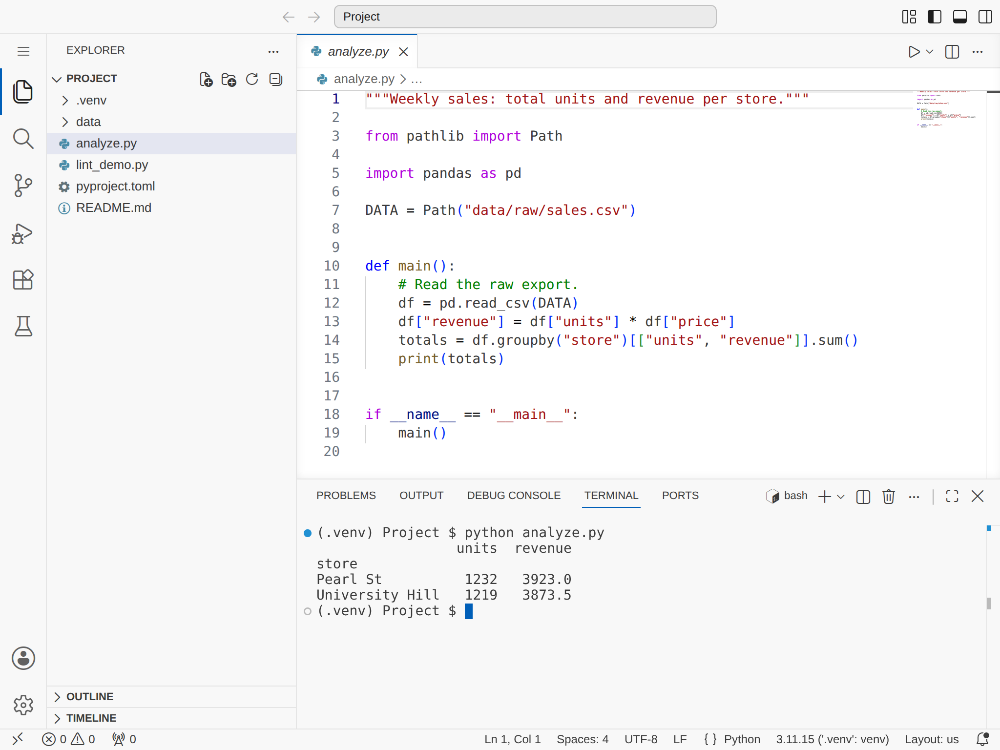

12 Text Editors
Prerequisites (read first if unfamiliar): Chapter 10.
See also: Chapter 11, Chapter 31, Chapter 17.
Purpose
You find the bug, fix it, save, and run the script again. Same error. You fix it again, more carefully, and run it. Same error. Twenty minutes later you notice that the file in your editor lives in Downloads/, and the script you keep running reads a different copy in your project folder. Or it’s the other classic: you type git commit on a lab server, land in a screen where typing does strange things, and can’t find any way out.
Neither means you’re bad at computers. Nobody showed you the habits around the tool: knowing which file you’re editing, how to get out of an editor you didn’t choose, and why a line that looks perfectly indented still breaks Python. You’ll spend more hours in a text editor than in any other program in this book, so a few hours learning to drive one well pays back every week.
This chapter covers what an editor does to your files, how to pick one, the skills that carry across every editor, the file problems that trip students up most, enough nano and vim to survive a server, a minimal VS Code setup, and the habits that keep a bad edit from costing you an afternoon. It doesn’t teach Python, and it won’t try to convert you to any editor; the examples use VS Code because most students start there.
Why read this chapter
- You saved your fix, reran the script, got exactly the same error, and started to doubt your own eyes.
- A
git commitdropped you into a screen where typing did strange things, and nothing you tried would let you leave. - Python says
TabError: inconsistent use of tabs and spaces in indentationabout a line that looks perfectly lined up. - A file from a classmate shows
’where the apostrophes should be, or a shell script dies with$'\r': command not found. - You renamed a function with Replace All and broke three other things whose names happened to contain the old one.
- You need to change one line of a config file on a server that has no mouse and no VS Code, just a terminal.
- You’ve heard VS Code, PyCharm, vim, and “IDEs” all called editors, and you’d like to know which one to use and how much setup is enough.
- You type the same five lines at the top of every notebook and suspect the editor could type them for you.
Running theme: editors are tools, not identities
Pick the editor that fits the job in front of you, and put your energy into the habits that carry across all of them: knowing where your files are, keeping them in a format every tool agrees on, searching well, and editing in a way you can undo.
12.1 What an editor is really doing
A surprising amount of computing happens in plain text: your Python scripts, your configuration files (.gitignore, pyproject.toml, _quarto.yml), your data when it’s CSV or JSON, your logs, and your README. A text editor is the one workbench that opens all of them.
That’s also why a text editor is the wrong tool for some files. Open a Word document in VS Code and you get a screen of gibberish, because a .docx isn’t text at all: it’s a zip archive of XML files (Office Open XML) that only makes sense to a program that knows how to unpack it. Images, Excel workbooks, and Parquet files are binary too. If a file opens as garbage, it’s usually not broken, just not text.
For text files, an editor reads bytes from disk, turns them into characters using a character encoding (the rulebook for which bytes mean which letters), lets you change them, and writes them back with the same rulebook when you save. Almost every mysterious editor problem (strange symbols, a file that looks fine in one program and broken in another, an “invalid syntax” error on a line that looks fine) comes from something going wrong in that round trip. Four words cover nearly all of it:
Encoding is that rulebook. The modern default is UTF-8, which can represent every language’s characters and is what nearly every tool expects. Save everything as UTF-8 unless you have a specific reason not to.
Line endings are the invisible characters that mark where each line stops. macOS and Linux use one character, a line feed (LF, written \n); Windows uses two, a carriage return followed by a line feed (CRLF, \r\n). The history of this split goes back to teletype printers, and it still produces noisy diffs and broken scripts when a project moves between operating systems.
Whitespace is the family name for spaces, tabs, and newlines. Most languages don’t care much about it, but Python, YAML, and Makefiles do: they read indentation as part of the meaning, so a tab where a space should be is a real error, not a style problem.
Syntax highlighting, linting, and formatting are the help an editor layers on top. Syntax highlighting colors keywords, strings, and comments differently so you can see the structure of code at a glance. Linters and formatters are separate tools, often run by the editor, that check your code for likely mistakes and rewrite its spacing to a consistent style (see Chapter 19).
12.2 Choosing your tool: three kinds of editor
“Which editor should I use?” has no single right answer, whatever the internet says. A more useful question is which kind of editor fits the job, because editors come in roughly three sizes.
The smallest are terminal editors like nano, vim, and emacs. They run inside a terminal window, so they work over SSH on any server you can log into, start instantly, and are installed almost everywhere, even on a bare-bones Linux machine. Their cost is the learning curve: vim in particular feels alien for the first few days. You don’t need to live in one, but you should know enough nano to open a file, change a line, save, and leave. That one skill turns “I need to fix one character on a server and I can’t” from a dead end into a thirty-second job.
The middle size is GUI code editors. VS Code is by far the most popular today, with Sublime Text and Cursor (a VS Code offshoot built around AI assistance) as alternatives.
They combine the speed of a plain editor with the handiest parts of a bigger tool: search across every file in a project, a terminal built into the window, formatting on save, linter warnings as you type, and Git integration (see Figure 12.1). For coursework, scripts, notebooks, and small projects, this is the right default. Pick one (almost everyone picks VS Code) and learn it well.

analyze.py is open in the editor with its Run button at the top right, and the integrated terminal below has just run the script from the project’s activated .venv.
The largest size is the IDE, or integrated development environment: Visual Studio for C# and .NET, IntelliJ IDEA for Java, Xcode for Swift and iOS apps, RStudio for R, and PyCharm for Python. An IDE bundles an editor with a build system, a debugger, and deep knowledge of one language. It earns its weight in ecosystems with heavy build systems and complicated projects, and it can also eat an afternoon when its idea of your project drifts out of step with reality.
For a typical student working in Python, the decision is short. For a quick edit on a remote server, use nano (or vim if you’re comfortable with it). For everything else (scripts, notebooks, small projects), use a GUI editor with its built-in terminal, and default to VS Code. Reach for a full IDE when a course or project asks for one.
12.3 Skills that carry across every editor
Learn these once in your daily editor, and you’ll recognize them in every other editor you ever use.
Open, save, and “where did it go?”
The most common beginner confusion isn’t how to save; it’s where the save went. You hit Save, run the script, and the error you just fixed is still there. The editor almost never lost your change. You edited a different file from the one your program runs: a copy in Downloads, a file you accidentally created with “Save As” under a slightly different name, or an old version your editor reopened from last week’s session.
The fix is a habit. The first time you save a file in a session, check where it lives. In VS Code, hover over the file’s tab to see its full path, or read the breadcrumbs above the code; most editors also show the folder next to the filename in the window title. Treat Save (write to the file you opened) and Save As (write a new file somewhere else) as different tools, and use Save As only when you mean to make a copy.
If the editor warns that a file is read-only, or asks for an administrator password to save it, don’t click through without thinking: you’ve probably opened a system file that ordinary users aren’t meant to change.
Undo, redo, and the net under the net
Undo (Ctrl+Z, or Cmd+Z on macOS) is your first safety net: try something, watch it fail, back out. Redo reverses an undo when you went one step too far; it’s Ctrl+Y on Windows, Ctrl+Shift+Z on Linux, and Cmd+Shift+Z on macOS in most editors, including VS Code.
Undo has limits, though. Its history usually lasts only while the file is open, and once you’ve made twenty more edits on top of a mistake, backing out means losing the good ones too. That’s what version control is for: commit before a risky change, and Git can show you exactly what changed and put the file back (see “Habits that prevent pain” below, and Chapter 31).
Indentation and whitespace
If Python has ever told you TabError: inconsistent use of tabs and spaces in indentation about a line that looks perfectly lined up, you’ve met the most frustrating kind of bug: one you can’t see. A tab and four spaces look identical on screen, but they’re different characters, and Python uses indentation to decide which lines belong to which block (the off-side rule). YAML is even stricter: it doesn’t allow tabs for indentation at all.
The cure is to make the invisible visible. In VS Code, run View: Toggle Render Whitespace from the command palette (or set "editor.renderWhitespace": "all"), and spaces appear as faint dots and tabs as faint arrows:
def greet(name):
····print(f"hello, {name}") ← four spaces
→ print(f"hello again") ← a tab: Python raises TabError hereOnce you can see the problem, the long-term fix is to pick one style per project and let the editor enforce it. For Python, the community standard is four spaces per level (PEP 8); YAML and most web files use two. VS Code already inserts spaces when you press Tab, four at a time, and it detects each file’s existing indentation when you open it (the "editor.insertSpaces" and "editor.detectIndentation" settings, both on by default). The current file’s style shows at the right of the status bar (“Spaces: 4”), and clicking it lets you convert a file between tabs and spaces in one step.
Find and replace without regret
Find and replace is a power tool, and like any power tool it can do a lot of damage in one second. Here’s how that looks. You want to rename the function compute_mean to weighted_mean, so you replace all. It works, and it also quietly renames a variable called compute_mean_squared to weighted_mean_squared, which three other files still use by its old name. Nothing complains until you run those files.
The safe way through is the same in every editor, and it’s four steps. Narrow the scope first. Editors let you replace inside a selection, in the current file, or across the whole project, and the last is both the most useful and the most dangerous. Start small, and when you do go project-wide, look at the list of matching files before replacing anything. Find before you replace. Run a plain search and read every match: a search for mean also finds meaning, demean, mean_squared, and every comment that uses the word. The Match Whole Word and Match Case buttons in VS Code’s search box (Alt+W and Alt+C on Windows) cut the false matches down. Replace one at a time for anything that matters. VS Code’s project-wide search panel (Ctrl+Shift+F, or Cmd+Shift+F on macOS) groups matches by file and gives each one its own Replace button. Commit before, and check after. Make sure your last good state is committed, so a bad replace costs you one git restore; then rerun the script or the tests, because a replace that runs without errors can still be wrong.
Real find-and-replace jobs often need a pattern rather than exact text, and that’s what regular expressions are for (see Chapter 18). A few pieces go a long way: ^ and $ for the start and end of a line, . for any character and .* for any run of them, \w+ for a word, and parentheses to capture text you want to reuse in the replacement as $1, $2, and so on. To turn every print("foo: " + x) into print(f"foo: {x}"), turn on regex mode (the .* button in the search box), search for print\("foo: " \+ (\w+)\), and replace with print(f"foo: {$1}"), after reading the list of matches.
When you’re renaming something in code, though, there’s a better tool than find and replace: Rename Symbol (F2), which understands the language and only touches the thing you mean. “Editing faster” below shows it.
Finding your way around a project
Once a project has more than a handful of files, you’ll spend more time finding things than typing them. Three commands make most of the difference (VS Code’s code navigation guide covers more). Go to File (Ctrl+P, or Cmd+P on macOS) jumps to a file when you type part of its name, which is much faster than clicking through folders. Go to Line (Ctrl+G on every platform) takes you straight to “line 147” when an error message names it. Go to Definition (F12, or Ctrl-click, Cmd-click on macOS) jumps from a function call to where the function is defined, even in another file. And project-wide search (Ctrl+Shift+F) finds every place a name or string appears.
All of these depend on one thing: opening the right folder. The project root is the folder that holds your README.md, pyproject.toml, or .git/. Open that folder in your editor (File → Open Folder in VS Code), not a single file and not the folder above it. Your file tree starts there, the built-in terminal starts there, and relative paths in your code are usually resolved from there. Open the wrong folder and searches quietly miss files and the terminal starts in the wrong place.
12.4 The write-run-read loop
For your first year or two of coursework, most of what you do in an editor is one small loop, repeated hundreds of times a day. Write or change a little code, ten to fifty lines at a time. Run it in a terminal beside the editor. Read the output, especially any error, slowly and all the way to the end (Chapter 7 shows how). Jump to the file and line the error names. Then make one change, save, and run it again.
That last step is where most of the pain comes from. When something breaks, every student’s instinct is to change three things at once (“maybe it’s the import, maybe the type, maybe the path”) and rerun. It’s the fastest way to create new bugs while chasing the old one, because when the error changes you can’t tell which edit changed it. If one change doesn’t fix the problem, undo it and try a different one.
Keep the terminal inside the editor so running is instant. In VS Code, Ctrl+` (Control and the backtick key, on macOS too) opens the integrated terminal at the bottom of the window, already sitting in your project folder:
$ python analyze.py
Traceback (most recent call last):
File "/Users/you/project/analyze.py", line 12, in <module>
df = pd.read_csv("data/raw/sales.csv")
^^^^^^^^^^^^^^^^^^^^^^^^^^^^^^^^^
... (more lines from inside pandas) ...
FileNotFoundError: [Errno 2] No such file or directory: 'data/raw/sales.csv'The first File line is the one from your code, and the last line says what went wrong. Ctrl-click (Cmd-click on macOS) the path analyze.py in the terminal and VS Code opens the file at line 12. Fix one thing (maybe you never downloaded the data, or it lives in data/processed/), save, and rerun.
Editor features that help beginners
Modern editors quietly do a lot of checking you’d otherwise do by hand, because they understand the language you’re writing. Four features are worth knowing by name.
Syntax highlighting and bracket matching catch typos before you run anything. Keywords, strings, and comments each get their own color, so a string you forgot to close turns the rest of the line the wrong color. When your cursor touches a bracket, the editor highlights its partner; if you put the cursor on an opening parenthesis and nothing lights up, it was never closed.
Auto-indentation and format-on-save keep your whitespace honest. Press Enter after a def line and the editor indents the next line for you; save, and a formatter can tidy the whole file’s spacing (see “Setting up a GUI editor” below and Chapter 19).
Linter warnings are the squiggly underlines under an undefined variable, an unused import, or a call with the wrong number of arguments. Think of them as the error messages you’d get when you run the code, delivered five seconds after you type instead of five minutes later.
Hover documentation and Go to Definition answer “what does this function take?” without leaving the file: hover over a name for its signature and docstring, or press F12 to jump to its definition.
When a debugger helps
Most small bugs are fastest to find with print(). A debugger earns its keep when printing gets awkward: you need to look inside a big nested structure, walk through a loop one pass at a time, or see many variables at one exact moment.
The vocabulary is small. A breakpoint is a marker on a line that tells the program to pause before running it and hand control to you. Continue runs until the next breakpoint. Step over runs the current line and stops at the next one. Step into follows a function call inside to see what it does, and step out finishes the current function and stops back where it was called. While you’re paused, a variables panel shows every value in scope, a watch panel keeps an eye on the expressions you care about, and the call stack shows the chain of calls that got you here.
In VS Code, click in the gutter to the left of a line number to set a breakpoint (a red dot appears), then press F5 to run the file under the debugger. F10 steps over, F11 steps into, Shift+F11 steps out, and F5 continues. Chapter 6 shows the same moves with Python’s built-in pdb, plus conditional breakpoints and debugging after a crash.
You don’t need a debugger on day one; plenty of working data scientists get by with print and tests. Reach for it when printing stops feeling fast.
12.5 When files misbehave
Some problems look like bugs in your code but are really problems with the file, which is why they’re maddening: the code on screen looks right. Here are the ones students hit most, by the symptom you’ll notice first.
Your edits have no effect
You save, you rerun, and the program behaves as if you’d changed nothing. The cause is almost always one of two things: you’re editing a different copy of the file from the one your code loads, or you ran the code from a folder (your working directory) where that file doesn’t live. Both are “where am I?” problems, not editor problems. Check where you are with pwd in the terminal, search the project for duplicate filenames so you know which copy you have open, and, as a temporary test, switch the failing path in your code to an absolute one so there’s no question which file it means. Once you’ve found the culprit, you can go back to relative paths (Chapter 10 explains the difference).
The file is secretly script.py.txt
A file that opens in the wrong program, or that Python refuses to recognize, is often the victim of a hidden filename extension. The classic version: a basic editor like TextEdit or Notepad saves your script.py as script.py.txt, and because your file manager hides extensions, it looks exactly like script.py. Turn on file extensions in your file manager (on macOS in Finder’s settings, on Windows in File Explorer’s View menu; Chapter 10 has the details), and check the name in your code editor’s tab, which always shows the whole name.
Strange symbols and invisible characters
You open a file and see ’ where an apostrophe should be, or boxes where letters should be. That’s mojibake: a file written in one encoding and read in another. A curly apostrophe is three bytes in UTF-8, and a program that reads those bytes with an old Windows encoding shows each one as its own character, â, €, and ™. In VS Code the file’s encoding is shown in the status bar; click it to reopen the file with a different encoding until it reads correctly, and then save it as UTF-8 so it stays fixed.
A cousin of this problem is the character you can’t see at all. Code copied from a web page, a PDF, or a chat app sometimes carries a non-breaking space that looks exactly like an ordinary space. Python won’t accept it:
File "/Users/you/project/clean.py", line 3
y = 2
^
SyntaxError: invalid non-printable character U+00A0The caret points at the gap after y, which looks empty. Delete the gap and type an ordinary space.
Line endings between Windows and Mac
When a project moves between Windows and macOS or Linux, line endings cause a family of strange failures. A shell script written on Windows dies on a Mac or a server with an error like this, because bash reads the invisible carriage return as part of a command:
$ bash setup.sh
setup.sh: line 2: $'\r': command not foundA Python script with a #!/usr/bin/env python3 first line fails with /usr/bin/env: 'python3\r': No such file or directory for the same reason, and a diff can claim that every line in a file changed when you edited only one. The fix is to agree on LF, which every tool understands. VS Code shows the current file’s line ending (LF or CRLF) in the status bar, and clicking it converts the file; the setting "files.eol": "\n" makes LF the default for new files. For a shared repository, a .gitattributes file tells Git to normalize line endings for everyone (GitHub’s guide shows how).
Config files that won’t load
YAML, Python, and Makefiles all treat indentation as meaning, and YAML is the least forgiving: a single tab can stop a whole file from loading. The quickest way to find out whether a YAML file is the problem is to ask the tool that reads it. With PyYAML installed, this one-liner stays silent if the file is fine and names the line and column if it isn’t:
python -c "import yaml; yaml.safe_load(open('config.yml'))"The worked example below walks through it.
12.6 Terminal editors: survival skills
You don’t need to become fluent in a terminal editor, but you do need to open a file, change a line, and save and leave without calling a friend. Sooner or later you’ll SSH into a server (see Chapter 13) where a terminal editor is the only one there is, or Git will open one for a commit message. Here’s the minimum for the three you’re most likely to meet.
nano: the friendly one
GNU nano is the terminal editor for people who don’t want to learn a terminal editor. It shows its most common keystrokes at the bottom of the screen, uses the arrow keys to move, and otherwise behaves like a stripped-down GUI editor: you type, and the text appears. If you learn only one terminal editor, make it this one.
The only confusing part is the notation in that on-screen help. ^ means the Control key, so ^X Exit means press Ctrl+X; M- means the Alt key (Option on a Mac, which may need “Use Option as Meta key” turned on in Terminal’s settings), so M-U Undo means Alt+U.
nano config.conf # open config.conf (or create it if it doesn't exist)
# arrow keys to move, then just type
# Ctrl+O write out (save); nano shows the filename, press Enter to confirm
# Ctrl+X exit (if there are unsaved changes, nano asks: Y to save, N to discard)
# Ctrl+W where is (search); type the text and press Enter
# Ctrl+\ replace; type what to find, then what to replace it with
# Ctrl+/ go to line number (older versions list it as Ctrl+_)Recent versions also save with Ctrl+S, and nano +42 config.conf opens a file with the cursor already on line 42. Practice the open, change, save, exit sequence once on a throwaway file, and nano stops being scary for good.
vim: the one that traps people
Vim is the editor behind the meme at the top of this chapter, and it’s the one you’re most likely to land in by accident: on many systems it’s what opens when Git needs a commit message. What makes it feel like a trap is that it’s modal. It starts in normal mode, where letters aren’t text but commands: typing dd deletes a line, u undoes, and a random burst of typing can do a surprising amount of editing. Once you know that, the escape route is short:
- Press
Esc(once or twice) to make sure you’re in normal mode. - Press
ito enter insert mode, where typing works the way you’d expect; pressEscto go back to normal mode. - In normal mode,
:wthen Enter writes (saves),:qquits, and:wqdoes both. - If you’ve made a mess and want out without saving anything,
:q!quits and throws your changes away.
That’s enough to edit a file. A few more commands cover most emergencies:
/pattern<Enter> search forward for "pattern"
n jump to the next match
:%s/old/new/gc replace "old" with "new" everywhere, asking before each one
:42 jump to line 42
u undo (in normal mode)
Ctrl+r redoWhy do people love it anyway? In normal mode, keystrokes combine like a little language. d means delete and w means word, so dw deletes a word and 3dw deletes three. ci" means “change inside quotes”: it deletes the text between the double quotes around the cursor (or the next pair on the line) and puts you in insert mode to type the replacement. For people who live in a terminal, that’s faster than a mouse. If you’re curious, run vimtutor in a terminal: it’s a built-in half-hour lesson that installs along with Vim.
emacs: the one with chords
Emacs is Vim’s philosophical opposite: no modes, just typing, with commands on Ctrl and Alt key combinations, often two in a row. Emacs’s own manual writes them compactly: C-x C-s means “hold Ctrl and press x, then hold Ctrl and press s.” The survival set:
emacs file.txt open file.txt (or, inside emacs, Ctrl+x Ctrl+f)
Ctrl+x Ctrl+s save
Ctrl+x Ctrl+c exit
Ctrl+s search forward as you type
Ctrl+x b switch between open files ("buffers")
Ctrl+g cancel whatever half-typed command you're inCtrl+g is the one to remember: when Emacs seems to be waiting for something and you don’t know what, it gets you back to normal.
12.7 Setting up a GUI editor (keep it minimal)
VS Code has hundreds of settings and thousands of extensions, and it’s tempting to spend an evening tuning everything. Resist it. A lightly configured editor is easier to rebuild on a new laptop, easier to explain to a teammate, and less likely to break after an update.
The settings that matter
VS Code keeps your settings in a file called settings.json; run Preferences: Open User Settings (JSON) from the command palette to edit it directly, or use the searchable Settings editor (Ctrl+,, or Cmd+, on macOS). The official settings guide explains both.
Start with whitespace. These lines set Python-friendly indentation, show whitespace all the time, and fix two common causes of noisy diffs on every save (spaces left at the ends of lines, and a missing newline at the end of the file):
{
"editor.tabSize": 4,
"editor.insertSpaces": true,
"editor.renderWhitespace": "all",
"files.trimTrailingWhitespace": true,
"files.insertFinalNewline": true
}Then turn on format on save. A formatter rewrites your file’s spacing, quote style, and line breaks to one consistent style every time you save, so you never argue with yourself (or a teammate) about where a space goes. For Python that’s Black or Ruff’s formatter; for web files, Prettier. Install the formatter’s extension and tell VS Code to use it, as its Python formatting guide describes:
{
"editor.formatOnSave": true,
"[python]": {
"editor.defaultFormatter": "ms-python.black-formatter"
}
}Add a linter for early warnings. For Python, Ruff is the current community favorite: fast, sensible out of the box, and available as a VS Code extension. Once it’s installed, problems show up as underlines while you type. Chapter 19 covers what linters check and how to configure them.
And use the built-in terminal. It isn’t a setting, but it belongs on this list: a terminal docked under your code, opened with Ctrl+`, starts in your project folder and keeps the write-run-read loop tight.
Extensions: install only what you can explain
Every editor’s marketplace will happily sell you productivity you don’t need. The rule that keeps you out of trouble: if you can’t say in one sentence what an extension does and why it’s installed, uninstall it. Extensions aren’t free. They use memory, slow startup, sometimes fight each other, and, since an extension runs with the same permissions as VS Code itself, a bad one can read any file you can.
Prefer extensions that are widely used, actively maintained, and from a publisher you recognize; the Extensions view shows install counts, update dates, and a check mark for verified publishers. Don’t install two that do the same job (two Python formatters, two Git tools), because they’ll fight over your files in ways that are hard to diagnose.
For a student working in Python, a good starting set is short: Python (from Microsoft), Ruff, Jupyter, and the Quarto extension if you write Quarto documents, plus GitLens if you want richer Git history. Add others when a real need appears. Write your list down, even as a “Recommended extensions” section in a README, so you or a teammate can rebuild the setup on a new laptop in minutes.
Workspace settings vs. user settings
VS Code, like most editors, keeps two layers of settings. User settings apply everywhere you open the editor. Workspace settings apply only inside one project folder and live in .vscode/settings.json at the project root, so you can commit them to Git and give everyone on the project the same behavior. When the two disagree, the workspace wins.
// .vscode/settings.json, committed to the repository
{
"python.defaultInterpreterPath": "./.venv/bin/python",
"editor.formatOnSave": true,
"editor.rulers": [88]
}This file tells VS Code to use the project’s own virtual environment for Python (see Chapter 15), to format on save, and to draw a faint vertical line at column 88, Black’s default line length. Your color theme and font size are personal and belong in user settings. Keep project behavior in the project, and on a borrowed laptop you can install VS Code, open the project, and be working in minutes.
12.8 Editing faster: the command palette, multiple cursors, and snippets
Once the settings above are in place, a few editor features turn repetitive editing from a chore into a few keystrokes. The examples use VS Code; Sublime Text, JetBrains IDEs, and most other GUI editors have the same features under similar names.
The command palette: the one shortcut to learn
Press Ctrl+Shift+P (Cmd+Shift+P on macOS) and start typing what you want: “format document,” “toggle word wrap,” “change language mode,” “rename symbol.” Every command the editor has is in this list, including the ones added by extensions, so you never need to remember which menu something lives in. The palette also shows each command’s keyboard shortcut beside it, which makes it the best way to learn shortcuts: when you notice you’ve run the same command from the palette three times, learn its shortcut. Ctrl+P (Cmd+P) is its sibling for opening files by name.
A handful of shortcuts are worth learning early (VS Code’s keyboard shortcuts guide has printable lists for each operating system):
| Windows / Linux | macOS | What it does |
|---|---|---|
| Ctrl+Shift+P | Cmd+Shift+P | Open the command palette |
| Ctrl+P | Cmd+P | Open a file by typing part of its name |
| Ctrl+/ | Cmd+/ | Comment or uncomment the selected lines |
| Alt+Up / Alt+Down | Option+Up / Option+Down | Move the current line up or down |
| F2 | F2 | Rename a variable or function everywhere it is used |
| Ctrl+D | Cmd+D | Add the next match of the selection to the selection |
| Ctrl+K Ctrl+S | Cmd+K Cmd+S | Open the list of every shortcut, and change any of them |
Rename (F2) is not find-and-replace. It understands the language, so renaming the variable df doesn’t touch df_raw, a string that happens to contain “df”, or a df in an unrelated function. Use it whenever you rename something in code, and keep find-and-replace, with the four steps above, for text.
Multiple cursors
Most editors let you place several cursors and type at all of them at once. Suppose you pasted a list of column names and need them as a Python list:
date "date",
store → "store",
revenue "revenue",Put the cursor before date, then add a cursor on each line below: Ctrl+Alt+Down on Windows, Option+Cmd+Down on macOS, Shift+Alt+Down on Linux (the command palette’s “Add Cursor Below” shows yours). Or hold Alt (Option on macOS) and click where each cursor should go. Now type ", press End to jump every cursor to the end of its line, and type ",. Press Escape to go back to one cursor. To place cursors in a straight column, hold Shift+Alt (Shift+Option on macOS) and drag.
Ctrl+D (Cmd+D) is the other half. Select a word, and each press adds the next place that word appears as another selection, so you can change several occurrences at once while seeing each one before you commit to it. Ctrl+Shift+L (Cmd+Shift+L) selects every occurrence in the file at once. Because you watch every change as you type it, multiple cursors are a safer way than a blind replace to edit a handful of similar lines.
Snippets: text you type often
A snippet is a template you insert by typing a short prefix. Editors come with snippets for common code, and you can write your own for the blocks you retype: the header of every notebook, the lines you run after every read_csv (see Chapter 20). In VS Code, run Snippets: Configure Snippets from the command palette and choose Python; the editor opens a JSON file where each snippet has a prefix, a body, and a description:
{
"Inspect a DataFrame": {
"prefix": "inspect",
"body": [
"print(${1:df}.shape)",
"print($1.dtypes)",
"$1.head()$0"
],
"description": "Shape, dtypes, and the first rows"
}
}Type inspect, and when the snippet appears in the suggestion list, press Tab or Enter: the three lines appear with df selected. Type a different name, and it changes in all three places at once, because $1 marks the same spot in each; press Tab again to jump to $0, where the cursor ends. For snippets the whole team should share, choose the option for the project folder instead: VS Code saves them in a .code-snippets file inside the project’s .vscode folder, which you can commit alongside the workspace settings above.
Learn these one at a time. A new shortcut is slower than the mouse for the first day; pick one a week, and use it until it’s automatic.
12.9 IDEs without the overwhelm
Sooner or later a course or a job will put you in front of a full IDE: PyCharm or IntelliJ, Visual Studio, Xcode, RStudio. Knowing what’s different about them explains both why people love them and why they occasionally lose an afternoon to one.
The project model
The big change from an editor to an IDE is the project model. VS Code treats “the project” as whatever folder you opened. An IDE builds and keeps its own picture of the project: which source files belong to it, how they depend on one another, which Python interpreter or Java version to use, which files are generated and which are written by hand, and how to build and run the whole thing. That picture lives in files in the project (.idea/ for IntelliJ and PyCharm, an .Rproj file for RStudio, an .xcodeproj bundle for Xcode), and the IDE re-indexes the project whenever it notices a change.
The payoff is features a plain editor can’t match: finding every use of a function precisely, renaming safely across a whole project, adding imports for you, and autocomplete that knows your types. The cost is that the IDE’s picture can drift out of step with reality. You add a file outside the IDE, change a dependency, or a setting gets corrupted, and suddenly it reports errors that don’t exist or can’t find files that do.
Two survival skills cover most of that. Don’t edit the IDE’s project files by hand. And learn how to make it start over: in IntelliJ and PyCharm, File → Invalidate Caches, then Invalidate and Restart, rebuilds the IDE’s picture from what’s on disk, and other IDEs have a similar reload command. It’s the IDE’s “turn it off and on again,” and it fixes a surprising number of phantom errors.
Debugging in an IDE
An IDE’s debugger is the same tool described in “When a debugger helps” above, usually with more polish: one-click breakpoints, a debug button (often F5 or a bug icon), stepping, a watch panel, and a call stack. Most IDEs also let you change a variable’s value while the program is paused, which is handy for asking “what if this list were empty here?” without starting over. When you need to understand a complicated object at one particular pass through a loop, it will save you hours.
12.10 Habits that prevent pain
A primary editor and a fallback
Your primary editor is the one you live in: a GUI editor for most students, an IDE if a course requires one. Commit to it and learn its shortcuts, search, and settings. Fluency compounds, while hopping between editors keeps you at beginner speed everywhere.
Your fallback editor is for when the primary isn’t available, which almost always means you’re on a server over SSH. nano is enough, and knowing how to get out of vim means you’re never stranded on a machine that only has Vim. It’s a ten-minute skill; practice it once and refresh it now and then.
# On any Unix machine you log into:
which nano # prints nano's location if it's installed
which vim # same for vimKeep text files boring
A “boring” text file is one every tool agrees about: UTF-8, LF line endings, and no trailing spaces or stray tabs. The settings earlier in this chapter enforce all three, and most cross-platform headaches disappear with them.
Don’t hand-edit generated files. If a file starts with something like # This file was automatically generated by ... or # DO NOT EDIT, take it at its word: the next time the generator runs, your change vanishes, and until then the file disagrees with its source. Find what generates it (a template, a schema, a script), change that, and run the generator again.
And commit configuration where collaborators can see it (editor settings in .vscode/settings.json, lint and format rules in pyproject.toml), so nobody has to debug “but it works on my machine.”
Version control as an editor’s safety net
Undo covers the last few minutes; Git can take you back to any commit you’ve made. So before any change that makes you nervous (a big replace, a refactor, an experiment), commit. If the change works, commit again. If it doesn’t, you can see exactly what you changed, throw it away, or set it aside with git stash while you try something else.
# Before a risky change:
git status # anything uncommitted?
git commit -am "Before renaming compute_mean"
# Make the change in the editor. If it went wrong:
git diff # what did I actually change?
git restore . # throw it all away; back to the last commitBe sure before you run git restore: the changes it throws away don’t go anywhere you can get them back from. The habit to build is commit small, commit often, and commit before anything that scares you. Commits are cheap, and the safety they buy is enormous. See Chapter 31 for the mechanics and Chapter 30 for how this fits into running a whole project.
12.11 Stakes and politics
The first time you open a .py file in VS Code, a notice in the corner offers to install the recommended Python extension from Microsoft, and you click Install. That’s a reasonable click. But notice what it does: it runs new code on your computer with the same permissions as the editor itself, which can read every file you can. The next click, on a free color theme from a publisher you’ve never heard of, is the same decision with far less reason to trust. In December 2025, Microsoft removed two extensions from its marketplace, one posing as a dark theme and one as an AI assistant, after researchers found that they stole passwords, crypto wallets, and browser sessions.
The editor also comes with choices you didn’t make. VS Code sends usage data to Microsoft unless you turn telemetry off. Microsoft also owns GitHub, where your code probably lives, and with it GitHub Copilot, the AI assistant built into VS Code; it also holds about a quarter of OpenAI. None of that makes VS Code a bad editor (it’s an excellent one), but one company now shapes the default editor, the default code host, and a leading AI assistant that new programmers learn with. The community build VSCodium exists for people who want the same editor without Microsoft’s telemetry and marketplace.
See Chapter 8 for the broader framework. The concrete prompt to carry forward: when you choose an editor and its extensions, ask whose code now runs every time you open a file, and which defaults you inherited without choosing.
12.12 Worked examples
Writing and running a tiny script
Here’s the whole write-run-read loop in miniature. Open VS Code on your project folder, create a file called hello.py, and type this, including the mistake (the print call is missing its closing parenthesis):
def greet(name):
print(f"hello, {name}!"
greet("world")Save, open the terminal with Ctrl+` (or View → Terminal), and run it:
$ python hello.py
File "/Users/you/project/hello.py", line 2
print(f"hello, {name}!"
^
SyntaxError: '(' was never closedPython points at line 2, and the caret sits under the parenthesis that was opened and never closed. Before you even ran it, the editor was hinting at the same thing: put your cursor on that ( and no partner lights up. Add the ), save, and run again:
$ python hello.py
hello, world!That’s the loop you’ll run thousands of times over your degree.
Fixing a config file that won’t load
A teammate sends you config.yml and says Quarto won’t read it. It looks fine, so ask the parser:
python -c "import yaml; yaml.safe_load(open('config.yml'))"After a long traceback from inside PyYAML, the last lines say exactly what and where:
yaml.scanner.ScannerError: while scanning for the next token
found character '\t' that cannot start any token
in "config.yml", line 3, column 1'\t' is a tab. Go to line 3 (Ctrl+G), turn on visible whitespace, and there’s the arrow where two spaces should be. Replace it with spaces, save, and run the check again. When the command prints nothing at all, the file parses. If it names another line, fix that one and repeat until it’s silent.
A safe rename across a project
You want to rename the function compute_mean to weighted_mean everywhere. Because it’s a function in your own code, the best tool is Rename Symbol: put the cursor on the name and press F2, type the new name, and VS Code updates the definition and every call it can find, across files.
If the rename has to reach places the language tools can’t see (a README, a config file, a string), use project-wide search, following the four steps from “Find and replace without regret.” Commit first. Search for compute_mean across the project (Ctrl+Shift+F) with Match Whole Word turned on, and read every match; without that option, compute_mean_squared would match too. Replace the matches one at a time from the search panel. Then run your tests:
pytest -qIf anything broke, the tests catch it while the change is still small enough to undo with git restore. It takes a minute longer than Replace All, and it has saved many people from very long days.
An emergency edit over SSH
A service on a server won’t start because of one wrong value in its config file. The whole fix looks like this:
ssh you@server
sudo nano /etc/myservice/config.conf # system files need sudo to save
# arrow keys to the line, make the change, Ctrl+O and Enter to save, Ctrl+X to exit
sudo systemctl restart myservice
exitIf you know the nano keys, that’s under a minute, which is why this chapter keeps saying to learn them. (If which nano finds nothing, you’re on a Vim-only machine: sudo vim, i to type, Esc then :wq to save and leave.)
12.13 Templates
Template A: editor setup checklist (first week)
Primary editor
[ ] Installed and up to date
[ ] Opens the project folder, not single files
[ ] Default indentation set (4 spaces for Python)
[ ] Visible whitespace: know how to turn it on
[ ] Format on save configured (if your course uses a formatter)
[ ] Linter installed (if your course uses one)
[ ] Integrated terminal: know how to open it
Fallback editor
[ ] nano practiced: open, save, exit, search
[ ] vim escape route known: Esc, then :q! or :wqTemplate B: safe find/replace protocol
1. Commit, so the last good state is saved
2. Search (no replace) and read every match
3. Narrow the scope (selection / file / project) and set Match Whole Word or Match Case
4. Replace one at a time
5. Save and review the diff (git diff)
6. Run the tests or rerun the script
7. Commit with a message describing the change12.14 Exercises
- Configure your editor to show line numbers and visible whitespace. Write down which settings you changed and where they live.
- Write a short script with two deliberate errors (an unclosed parenthesis, a misspelled variable). Find each one using only the editor’s cues (highlighting, bracket matching, linter underlines) before running it.
- In a small project, use project-wide search to find every place one function name appears. How many files is it in? Did the search find anything you didn’t expect?
- Rename a variable with find-and-replace using the steps in Template B, then run the code or tests to confirm nothing broke. Next, rename a different variable with
F2and compare the two experiences. - Open a throwaway file in
nano, change a line, save, and exit. Then do the same invim, including one exit with:q!that throws the change away. - Save a small text file with CRLF line endings (click
LFin VS Code’s status bar and chooseCRLF), then rungit difforfile yourfile.txtto see how the tools notice. Switch it back to LF. - Paste ten column names, one per line, into a new file and turn them into a Python list with multiple cursors, without retyping any name. Then write a snippet for a block of code you type often and use it three times.
12.15 One-page checklist
- I open the project folder, and I check which file I’m editing before I trust a save.
- I can use find and replace safely, including across many files, and I use
F2to rename code. - I can turn on visible whitespace, and my editor inserts spaces when I press Tab.
- My files are UTF-8 with LF line endings, and I know where the editor shows both.
- I can diagnose the common file problems: wrong copy, hidden extension, encoding, line endings, tabs in YAML.
- I know when to reach for a terminal editor, a GUI editor, or an IDE.
- My editor is minimally configured: indentation, format on save, a linter, and only extensions I can explain.
- I find commands in the command palette and learn one new shortcut at a time.
- I commit before risky edits and use
git diffandgit restoreto recover. - I can open, edit, save, and exit a file in
nano, and get out ofvim.
12.16 Quick reference: terminal editor survival commands
| Task | nano | vim |
|---|---|---|
| Open a file | nano file |
vim file |
| Start typing | just type | i (then Esc when done) |
| Save | Ctrl+O, Enter |
:w |
| Save and quit | Ctrl+O, Enter, Ctrl+X |
:wq |
| Quit, discard changes | Ctrl+X, then N |
:q! |
| Search | Ctrl+W |
/text, then n |
| Replace | Ctrl+\ |
:%s/old/new/gc |
| Go to line 42 | Ctrl+/, then 42 |
:42 |
| Undo | Alt+U |
u |
In emacs: Ctrl+x Ctrl+s saves, Ctrl+x Ctrl+c exits, Ctrl+s searches, and Ctrl+g cancels.
12.17 Quick reference: GUI/IDE search
- Find / replace in the current file:
Ctrl+F/Ctrl+H(macOS:Cmd+F/Cmd+Option+F) - Find / replace across the project:
Ctrl+Shift+F/Ctrl+Shift+H(macOS:Cmd+Shift+F/Cmd+Shift+H) - Go to line:
Ctrl+G; go to file:Ctrl+P(Cmd+P); go to definition:F12 - Command palette:
Ctrl+Shift+P(Cmd+Shift+Pon macOS); more shortcuts in Table 12.1
- Microsoft, VS Code documentation — the official guide to everything in this chapter’s VS Code sections, from basic editing to debugging.
- Microsoft, VS Code Python tutorial — a short, hands-on walk through writing, running, and debugging Python in VS Code.
- VSCodium — the community-maintained build of VS Code without Microsoft’s telemetry and proprietary marketplace; useful when you want the editor and the freedoms separately.
- Drew Neil, Practical Vim — the standard book for learning Vim well; pairs nicely with the built-in
vimtutorfor hands-on practice. - GNU, Emacs Tour — a guided tour of Emacs, the other long-lived editor tradition; worth half an hour even if you never adopt it, just to see the alternative model.
- nano, Cheat sheet — every keystroke you need for quick edits over SSH, on one page.
- JetBrains, PyCharm documentation — if you outgrow VS Code’s Python features, PyCharm is the best-known Python IDE, and JetBrains offers free educational licenses to students.